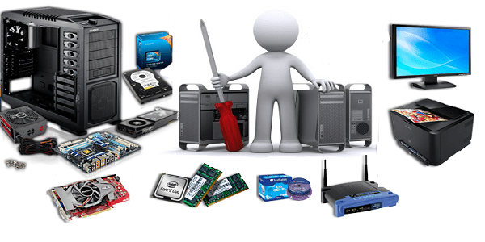

Maintenance Informatique
La maintenance informatique répond à plusieurs objectifs : préserver les performances des matériels et logiciels, mettre à jour le système informatique et bien évidemment corriger les éventuels problèmes du parc informatique. Un plan de maintenance informatique efficace doit ainsi comporter trois volets : la maintenance préventive, la maintenance corrective, et la maintenance évolutive.

Hardware
Hardware représente le matériel informatique physique palpable qui peut être à l’intérieur comme à l’extérieur de votre ordinateur. Des exemples de hardware :
- Le clavier/ la souris/ l’écran
- RAM/ ROM/ disque dur/ clé USB
- Le processeur/ la carte graphique
- L’imprimante
Toutes les pièces internes d’un ordinateur peuvent recevoir, envoyer, traiter et stocker des informations. Elles sont montées sur des circuits imprimés et reçoivent les instructions des softwares pour exécuter des commandes. Ces pièces autrement dit « hardware », ont une durée de vie limitée de 2 à 5 ans environ, selon la qualité des produits. Le matériel doit être changé après un certain temps, car l’usure peut entraîner des défaillances et avoir un impact négatif sur la puissance et l’autonomie de votre appareil.
Software
Contrairement au hardware, le software n’est pas palpable. Le terme software est utilisé pour décrire un logiciel qui permet à votre ordinateur de fonctionner et assure le traitement des données. Plusieurs logiciels sont installés sur votre appareil pour donner des commandes, afin que des tâches spécifiques soient exécutées selon leurs utilisations. Dans le cas contraire, vous ne pouvez rien faire avec les « hardwares ». Les logiciels n’ont pas de durée de vie limitée, mais des mises à jour sont utiles pour qu’ils gardent leur efficacité.
Accueil